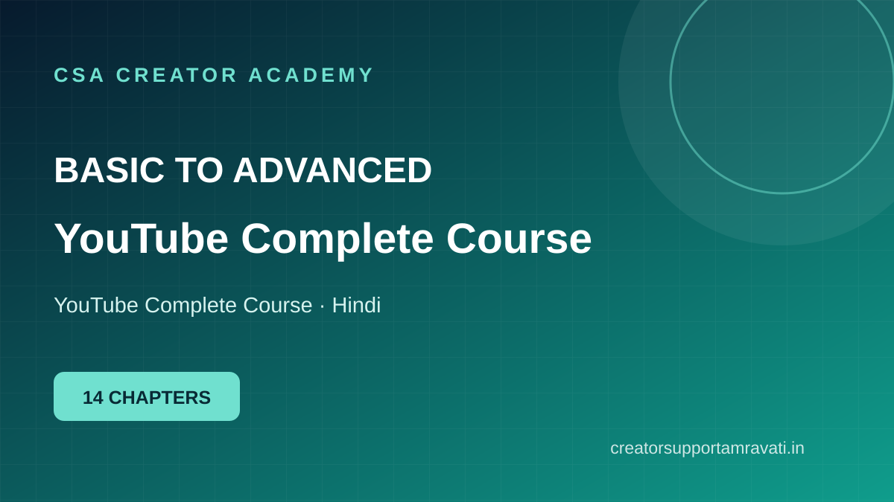
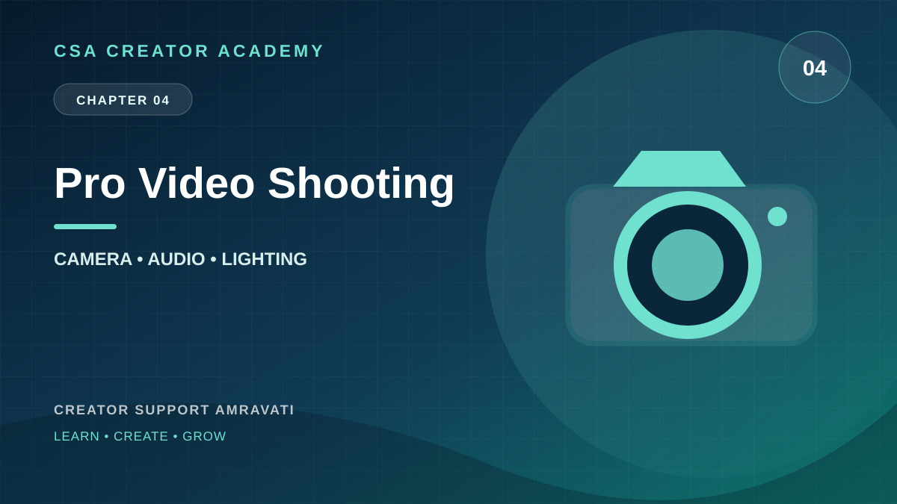
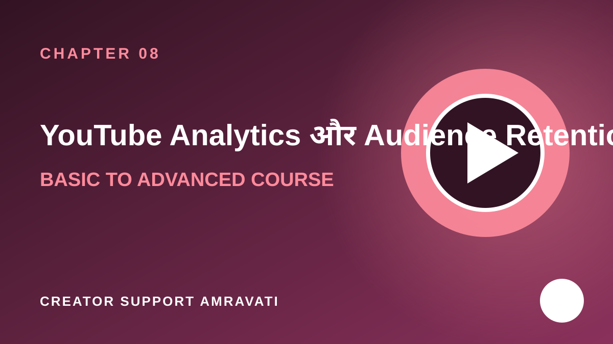

CHAPTER 01 · Foundation
Channel niche, audience research और content pillars
YouTube channel niche selection, target audience research, content pillars और sustainable creator strategy की practical Hindi course lesson.
Chapter पढ़ें →अपना YouTube channel शुरू करने से लेकर content strategy, professional shooting, editing, SEO, analytics और sustainable monetization तक—इस course को क्रम से पढ़ें और हर chapter का practical assignment पूरा करें। यह course beginners, creators, educators, freelancers और छोटे businesses के लिए बनाया गया है।
Course format: 14 chapters · Hindi explanations · practical action plans · official references · no guaranteed views or income claims
यह learning path basic concepts से शुरू होकर production और growth systems तक जाता है। हर lesson में concept, practical steps, common mistakes और action exercise शामिल हैं। YouTube के interface, eligibility और policies बदल सकती हैं; इसलिए current requirements के लिए official YouTube Help Center को अंतिम reference मानें।

YouTube channel niche selection, target audience research, content pillars और sustainable creator strategy की practical Hindi course lesson.
Chapter पढ़ें →
YouTube channel create करना, handle, profile, banner, about section, playlists, permissions और brand identity की complete Hindi guide.
Chapter पढ़ें →
YouTube video scripting, opening hook, storytelling, research, retention structure और natural delivery की practical Hindi training.
Chapter पढ़ें →
Mobile और camera से professional YouTube video shoot करने के लिए framing, exposure, audio, lighting, background और practical setup Hindi course.
Chapter पढ़ें →
YouTube editing workflow, footage organization, rough cut, pacing, B-roll, audio cleanup, color correction, captions और export settings की Hindi guide.
Chapter पढ़ें →
YouTube search intent, title writing, thumbnail design, description structure, tags, hashtags और metadata की practical Hindi course.
Chapter पढ़ें →
YouTube Shorts strategy, long-form videos, live streaming, repurposing workflow और audience journey की Hindi guide.
Chapter पढ़ें →
YouTube Studio analytics, impressions, CTR, watch time, retention graph, traffic sources और data-led growth decisions की Hindi course.
Chapter पढ़ें →
YouTube Partner Program eligibility, monetization policies, ads revenue, sponsorship, affiliate disclosure और creator income planning की Hindi guide.
Chapter पढ़ें →
Advanced YouTube channel strategy, production systems, team workflow, brand partnerships, content repurposing और sustainable creator business की Hindi guide.
Chapter पढ़ें →
इस विषय पर विस्तृत practical guide पढ़ें और अपने channel पर लागू करें।
Chapter पढ़ें →
इस विषय पर विस्तृत practical guide पढ़ें और अपने channel पर लागू करें।
Chapter पढ़ें →
इस विषय पर विस्तृत practical guide पढ़ें और अपने channel पर लागू करें।
Chapter पढ़ें →
इस विषय पर विस्तृत practical guide पढ़ें और अपने channel पर लागू करें।
Chapter पढ़ें →हां। Course niche selection और channel setup से शुरू होता है और धीरे-धीरे advanced production, analytics और monetization तक जाता है।
नहीं। कोई भी genuine course views, subscribers या income की guarantee नहीं दे सकता। परिणाम content quality, audience needs, consistency और platform policies पर निर्भर करते हैं।
हां। Basic recording और editing mobile से शुरू की जा सकती है। जरूरत के अनुसार audio, lighting और production workflow को बेहतर बनाएं।
Course educational guidance देता है। YPP eligibility और monetization policies बदल सकती हैं, इसलिए apply करने से पहले YouTube Studio और official Help Center पर current requirements verify करें।
यदि आपको YouTube video shooting, podcast production, editing, thumbnails या channel content planning में professional support चाहिए, तो project requirements के साथ CSA से संपर्क करें।